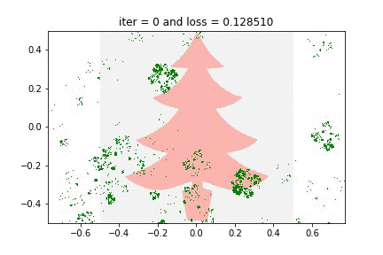
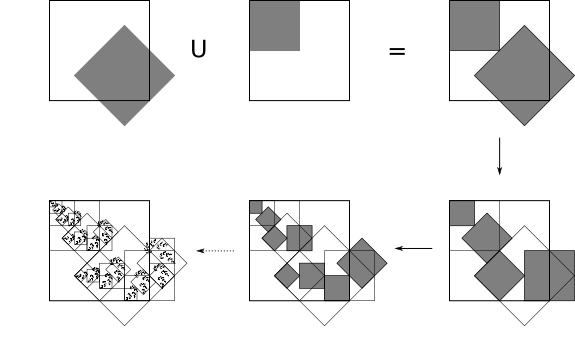
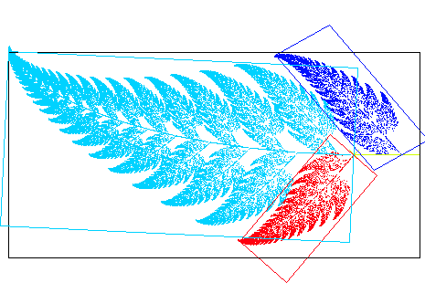
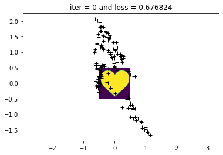
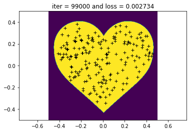
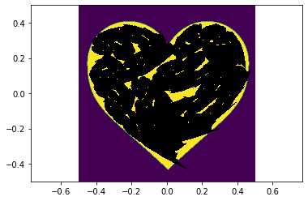
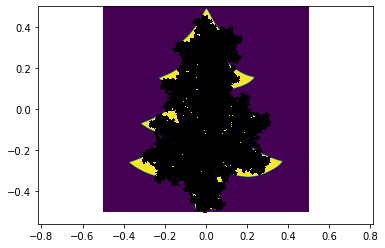

Learning to Play the Chaos Game
I, Thomasina Coverly, have found a truly wonderful method whereby all the forms of nature must give up their numerical secrets and draw themselves through number alone…
Friday, December 25, 2020 · 7 min read
It’s Christmastime again! Shall we talk about trees? This post is about my new holiday hobby: hallucinating tree-shaped fractals using our old friend, gradient descent.

But — let me start at the beginning. For a variety of reasons, the cover image of Douglas Hofstadter’s I am a Strange Loop has been on my mind this month. I have been thinking a lot about this wonderful image created by pointing a camera at a projector that displays what the camera is seeing. In modern terms: what happens if you screen-share the screen sharing window? This happens:
Such “feedback loop” recursions often rapidly converge to breathtaking fixed-points. The NYC MoMath even has an art installation that lets you play with a camera-and-projector setup to make wonderful patterns.
As you can imagine, there is a mathematical theory here. At risk of ruining the mystery, I will tell you about it, though without writing any equations. :-) The theory is the theory of Iterated Function Systems, which is almost exactly what it sounds like. Start with a set of affine functions (affine because that’s what camera-projector-systems do) and repeatedly apply them to a set of points, taking the union at each step. Regardless of where you start, you will soon end up with a fractal structure which is the fixed point of the system. Why fractal? —because the self-similarity comes from the infinitely-nested composition of the affine functions.

There are theorems that ensure convergence towards and uniqueness of this fixed point in the limit, but… it’s believable enough, don’t you think? Following your intuition, you can build Sierpinski Triangles and Barnsley Ferns and all sorts of other beautiful structures using an IFS. I refer you to Section 8.2 of The Algorithmic Beauty of Plants by Prusinkiewicz and Lindenmayer (yes, that Lindenmayer) for more botanical connections.

Now here is the question that has been on my mind: if I give you a picture of a fractal-fern, can you give me a set of affine functions whose fixed point is that fern? This is the inverse problem for IFSes. According to Wikipedia, this problem has real-world applications in image compression, but it is hard to do in general.
Hmm. Interesting. Can our favorite tool, gradient descent, come to the rescue? At least in an approximate sense? Recall that a two-dimensional affine function is really just a 3x3 matrix (with 6 free parameters) that encodes the details of the transformation. If we could easily compute images of IFS fixed points from a set of matrices, then perhaps we could try to optimize the parameters of these matrices to make the fixed point look the way we want it to.
The challenge, of course, is efficiently finding the fixed point — repeatedly rasterizing and compositing affine transformations on images sounds expensive — and doing so differentiably sounds like a scalability nightmare! But there is a wonderful solution to this problem, which is to play the so-called “chaos game.” Instead of densely applying all the functions to all the points on the plane, you can sparsely approximate the fixed point as follows: Start with a point — any point! — and randomly select one of the affine functions of the IFS and apply it to the point. Repeat this process with the new point. It turns out that in the limit, the “trail” left behind by this wandering point converges to the fixed point of the IFS. (This, too, is a theorem, but again I think it is believable enough that I will not demand a proof.) This is what the “chaos game” looks like for the Sierpinski triangle; notice how the salt-and-pepper spattering of points soon converges boldly into the fractal we know and love (it’s an animation — stare for a few seconds).
So here is the plan: we start with a point, and play the chaos game with our current IFS matrices to obtain a point cloud that stochastically approximates the fixed-point. Then, we compare this point cloud to our target fern-image to obtain a “loss.” Finally, we update our IFS matrix parameters to minimize this loss, until at last the fixed-point converges to the target image. It’s just “machine learning,” really: we’re learning to play the chaos game!
Here is an outline of the algorithm (with some details elided):
# initialize IFS
F = [random_3x3_affine() for _ in range(4)]
o = torch.optim.Adam(F, lr=0.0001)
for step in range(100_000):
o.zero_grad()
# start at origin
v = torch.tensor([0., 0., 1.])
# play the chaos game once
trace = []
for _ in range(200):
# applying an affine function is just
# a matrix multiplication!
v = torch.matmul(random.choice(F), v)
trace.append(v)
# treat the trace as a point cloud
loss = compare(target_image, trace)
# update parameters
loss.backward()
o.step()
Ah! Actually, there is one detail that I should explain: how do you compare a point cloud and an image? My idea is to convert the target image to a second point cloud by uniformly sampling points from it, for example by rejection-sampling. Then you can compare the two point clouds by the so-called “chamfer distance,” which is the mean distance from each point to its nearest neighbor in the opposite point cloud. This is quadratic-time to compute, and the most expensive part of the whole operation, but with ~100 points in each set it is quite doable.
A pedagogical aside: notice that the “trick” here is really a change in representation. This optimization problem is easier to solve on point clouds than on raster images! An important lesson, that applies across the ML-for-graphics domain… and more broadly to all differentiable programming enterprises.
Remarkably, this zany scheme works quite well! Let’s try it with a heart. (A heart, because it’s an easy low-entropy shape, but also because it felt symbolically appropriate in relation to Hofstadter’s broader philosophical project of souls-within-souls-within-souls.)
When we initialize the system with 4 random affine transformations, the trail left behind by the chaos game is very unimpressive. The sparsity is because I simulate only 200 steps of the chaos game for each step of gradient descent — there’s a tradeoff between noise and computation time, of course, as there is with any form of SGD.

Okay. Time to optimize! Here is what it looks like after 100K steps of optimization with an Adam optimizer (that’s about 40 minutes of wall-time computation on my old MacBook). It looks pretty good, don’t you think? The chamfer distance scheme works!

Now we can export the four affine matrices out from PyTorch and work out the “true” fixed point with a more expensive offline computation (for example, by simulating a few million steps of the chaos game). It looks like this — not perfect, and indeed quite crayon-scribble-ey, but clearly something interesting has happened, and the result is convincingly heartlike.

Where is the fractal structure hidden in this heart? This needs some vizualization tooling to see clearly. After a bit of JS-canvas-hacking: here is a GIF of the heart that reveals its fixed-point structure. Hearts-in-hearts-in-hearts!
I will admit to blinking a few times when I first saw this animation play out in full — I did not expect it to work, and even now I find myself marveling at this creation? discovery? of a heart encoded in 24 numbers.
But it still doesn’t look quite right — the fractalness isn’t obvious. How come? It’s because our affine transformations stretch and squash the heart into almost unrecognizable blobs. A final, natural improvement is to force our affine transformations to be rigid, so that there isn’t any squishing or skewing in the fractal. This is actually not too bad to implement: the solution to problems of constraint are typically reparametrizations, and indeed in this case we can simply reparametrize the matrices in terms of a rotation, an (isotropic) scale, and a translation. Now we’re down from 6 parameters per matrix to just 4 — even more magical! The result is a much more “obviously” fractal-ey fixed point, simply because your eye can more easily pick out the structural recursion when it is made of rigid motions.
Let’s take it for a — pardon — spin!
Since I promised you trees, here is some fractal foliage. The target image was a picture of a maple leaf! I’d never thought about this before, but indeed a maple leaf contains within it an echo of the whole tree. (Full disclosure: it takes a couple of randomized restarts to get a really impressive result — the low dimensionality of the fractal’s parametrization leads to the same stuck-in-a-local-optimum woes that differentiable rendering folks face all the time…)

This one uses just three matrices — experimentally, three matrices tend to be enough to get really good results, and more just lead to very busy and crowded fractals. (I don’t know if there is a word for number-of-maps–in-an-IFS, but let’s call it the IFS’s arity. In this terminology, I like ternary IFSes.)
And finally, since I promised you Christmas trees…

This last animation is actually absolutely baffling to me. In part, this is because of how treelike the fractal turned out — here it is overlayed against the silhouette I optimized against. Can you imagine this is encoded by just 12 parameters? Odd.

But even more bafflingly: the actual geometry of the recursion is nothing like the tree recursion geometry you and I are used to from CS106! Compare the GIF above to Barnsley’s Fern: while Barnsley turns each full leaf into two smaller leaves with “semantic” affine maps, this Christmas tree does all sorts of bizarre uninterpretable cartwheels and somehow almost magically works itself out in the end. It is mesmerizing to me, I can stare at it for minutes at a time.
When you think about it, it is quite shocking that a Christmas tree is the unique fixed point of these 3 rigid affine maps. “Beautiful” isn’t the word for it — neither is “grotesque” (though both words have been used by various people I have shared this with). There is something just unsettlingly fascinating about the way something magical pops out from three rectangles. Maybe I should have demanded a proof of that theorem after all…
There is so much more to say about all of this. What shapes are easiest to IFSify, and why? In higher dimensions, can we treat the IFS as a kind of SVD-esque dimensionality reduction scheme for data (i.e. literal point clouds)? What kind of data would it make sense to do this for — where do you find spatial self-similarity? Do point clouds have an inherent IFS “dimensionality” (in terms of, say, the number of affine transformations you need to get a good approximation)? With some more work, could SGD be a legitimate solution to the open problem of fractal compression?
It’s a lot to think about — but for now… well, there is a Calvin and Hobbes gag that begins with Calvin saying “I’ve been thinking” and Hobbes interrupting “On a weekend?” That’s how I’ve been feeling this winter break! Now it is time to shutdown the jupyter kernel and get some rest — Comfortably Numbered will return in 2021!
(Jupyter notebook for this blog post available on Github.)
Update (Dec 27): Check out some improvements made by a reader!
Update (Dec 29): I was pointed to a 1998 paper (Melnik and Pollack) that (independently!) tells exactly the same story. I’m struck by how closely the two expositions align. There is something deeply comforting about rediscovering a place someone else has visited once-upon-a-time, like finding a flag buried under the snow on a mountaintop — a kind of storybook enchantment that sits across the table from loneliness.